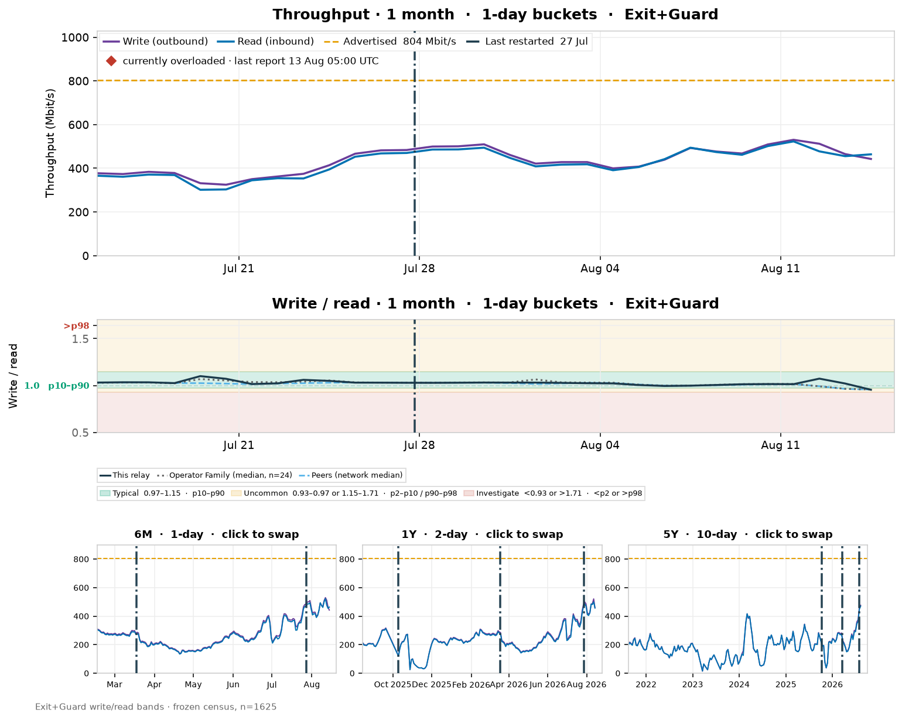
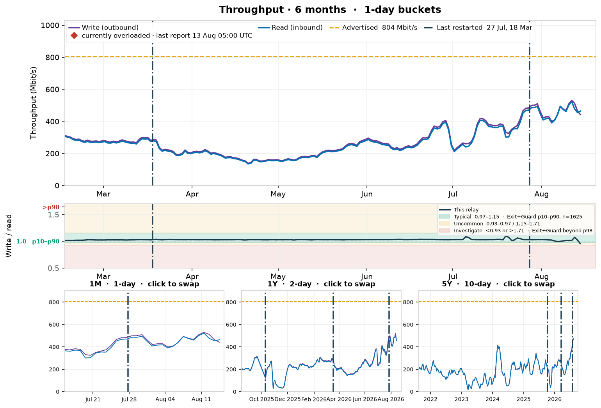

Home > Browse by Network > AS205100 > F3Netze
Option 3 of 3 — History subsection after Network Participation
Chosen. Snapshot numbers stay together. History is 1M hero + sparks; click a spark to swap it with the hero. Overload sits on a second legend line, tight against Write/Read.
Relay: F3Netze (f3netze.de)
· overloaded.
View Relay "F3Netze"
Fingerprint: 3C89C80E2699FB6358BBB64FDC9547AFCB5C03F7 |
Operator: f3netze.de |
Family: 24 relays |
AS205100 · Germany |
Tor 0.4.9.11 on Linux
- Flags
- Exit, Fast, Guard, Running, Stable, V2Dir, Valid
- BW Weight
- 0.1099% of Network | 100.54 MB/s Observed By Relay
- Version
- 0.4.9.11 Recommended
Flags and Eligibility
Unchanged — eligibility table stays. Flag-flapping
chart (R3) would sit here later. Dimmed in this mockup.
- Observed Bandwidth
- 100.54 MB/s
- Advertised Bandwidth
- 100.54 MB/s
- Rate Limit
- 1.07 GB/s
- Burst Limit
- 1.07 GB/s
- Measured By
- Yes (≥3 authorities)
- Consensus Weight
- 250,000 (0.1099% of network)
Network Participation:
Consensus Weight: 0.1099% of network |
Guard: N/A |
Middle: N/A |
Exit: 0.3377%
Click a spark to swap it with the hero
Default — 1M hero, 6M / 1Y / 5Y sparks

Click a spark (interactive frame above) to promote it. 1M stays the default because it has the finest buckets.
After clicking the 6M spark

6M is now the hero; 1M moved into the spark row. Onionoo only publishes last_restarted (27 Jul). 18 Mar and 9 Oct on longer graphs are a mock of a multi-restart archive — one legend, comma-delimited dates, one vline each.
Bandwidth Values Explained:
Relay Reported = descriptor observed / advertised — flag eligibility.
Authority Measured = sbws — consensus weight.
This chart = bytes actually transferred (Onionoo /bandwidth),
not observed_bandwidth over time.
Uptime and Stability
Existing 1M/6M/1Y/5Y scalars + overload subsection
stay. R1 uptime chart sits here. Dimmed in this mockup.
Overload details remain in this section; the bandwidth chart only
repeats a current cue if the flag is on.